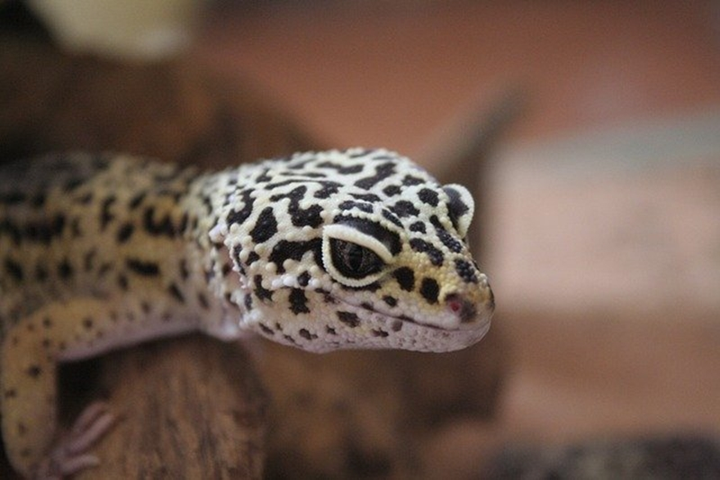
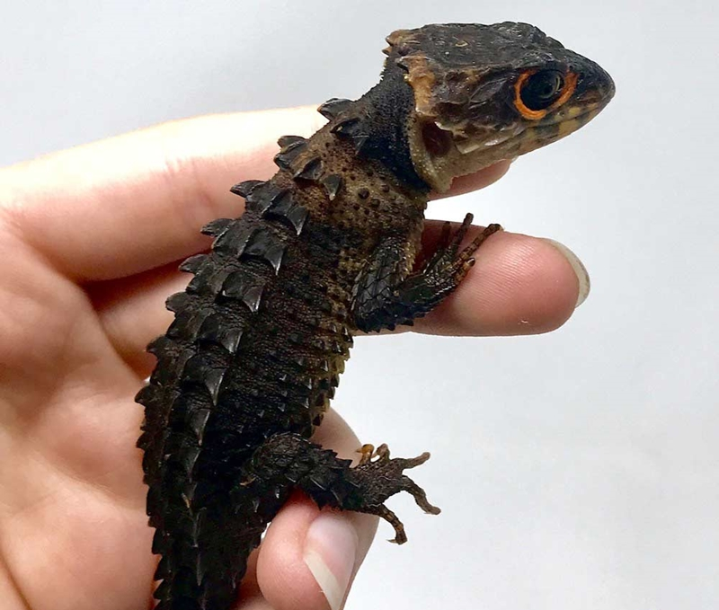
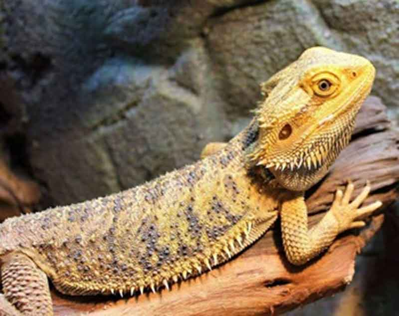
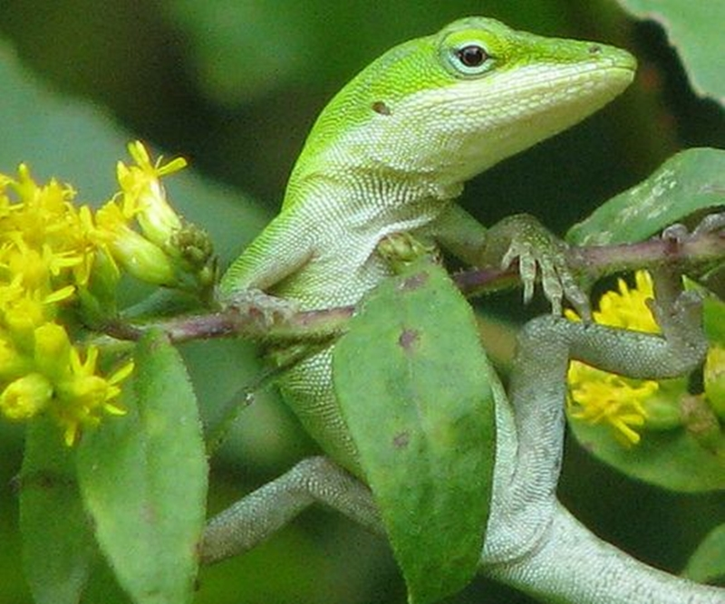
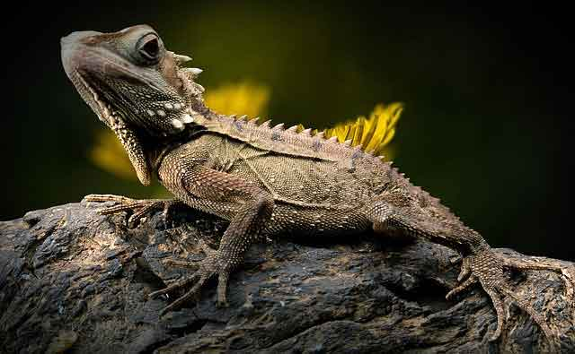

이색 반려동물 도마뱀, 대표적인 종류를 알아봐요!
야생에는 정말 다양한 동물이 많습니다. 그리고 야생에서 살던 동물은 사람의 손길이 닿기 시작하며, 심심치 않게 가정에서도 길러지고 있는 데요. 오늘은 이색 반려동물 도마뱀에 대해 알아볼까 합니다! 반려동물로 키우는 '도마뱀' 대표적인 종류를 알아봐요.
1. 인기쟁이 '레오파드 게코 도마뱀'
한국에서는 레오파드 게코 도마뱀이 가장 인기가 있습니다. 일명 '게코 도마뱀 부르죠. 길이는 25~30cm 정도 되며 성체까지 약 2년의 세월이 필요합니다. 야행성이라는 특징도 있죠! 수명은 대략 10년 정도 되며, 비교적 번식이 쉬운 종에 속한다고 해요. 게코 도마뱀이 인기가 많은 이유는 성질이 온순하고 사람에게 위협이 되지 않기 때문이라고 합니다.
2. 눈망울이 귀여운 '아머드 스킨크'
순진한 외모에 눈망울이 큰 '아머드 스킨크'. 검은빛을 띠어 마치 육지 위의 박쥐 같은 느낌이 드는 데요. 아머드 스킨크는 영화 드래곤 길들이기에 나오는 '트슬리스'의 모델이라고도 합니다. 이 종 또한 인기가 많은 종이자 사육 방법이 비교적 쉬운 편이지만 개체 특성상 돌연사가 많은 종 중의 하나입니다. 아마, 예민한 성격 때문이라고 하는 데요. 그런데도 귀여운 외모가 포인트인 아머드 스킨크, 인기는 날이 갈수록 높아지고 있다고 합니다.
3. 사막 도마뱀, '비어디드 드래곤'
'비어디즈'라고 부르기도 합니다. 최대 길이 61cm로 반려 도마뱀으로 키우기에는 상당히 긴 편입니다. 사막에서 자란 환경 덕분에 가정에서 키우면 환경적인 요건을 충족시키기엔 어려운 면이 있지만, 파충류 초보자에겐 비교적 쉬운 종입니다. 먹이도 다른 도마뱀과 마찬가지로 곤충과 과일을 주식으로 하며, 가장 구하기 쉬운 '밀 웜'이 대표적입니다. 다만, 밀 웜도 지방질이 높은 편이라 영양적인 면에서 고른 섭취를 할 수 있도록 도와주는 게 좋습니다.
4. 캐리비안의 섬에서 온 '아놀'
카멜레온과 비슷한 모습을 가지는 '아놀'은 기분, 환경, 온도 등에 따라서 카멜레온보다는 조금 느린 속도로 색이 바뀝니다. 아놀의 최대 길이는 20.3cm. 평균 수명은 조금 짧은 4년 정도이며 어떻게 관리하느냐에 따라서 수명은 조금씩 달라질 수 있습니다. 다만, 주의할 점은 수컷 아놀은 지배적인 성향이 매우 강해서 만약 여러 마리의 도마뱀을 키운다면 수컷 아놀은 한 마리가 적절합니다.
그 외에도 게코나 스킨크의 다른 종도 많습니다. 선택의 폭이 비교적 넓은 편이라 건강하고 안정적인 환경에서 사육할 수 있는 도마뱀을 선택해 반려동물로 키우는 것이 좋습니다. 또한, 모든 파충류는 '살모넬라 바이러스'를 보균할 수 있어 이와 관련된 상식 또 충분히 숙지한 다음에 사육을 선택해야 할 것입니다.
[출처] 이색 반려동물 도마뱀, 대표적인 종류를 알아봐요! ｜ 작성자 까미꾸러기